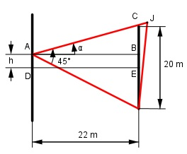
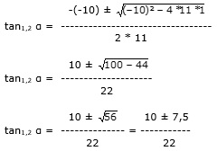

Aufgabe 224 Eine Hausfront ist 20 m lang und soll von einem 22 m gegenüber-liegenden Haus aus von einem Scheinwerfer mit einem Öffnungswinkel von 45° so angestrahlt werden, dass sie komplett ausgeleuchtet wird. An welcher Stelle h muss man den Scheinwerfer anbringen?

Ein Lichtkegel von 45° hat im Abstand von 22 m eine Breite b von: b/2 b tan 45°/2° = -------- = ------ |*44 m 22 m 44 m b = 44 m * tan 22,5° = 44 m * 0,4142 = 18,2 m, leuchtet also die Haus-front von 20 m nicht ganz aus. Deswegen muss der Scheinwerfer aus der Mitte nach rechts oder links um h versetzt und dann verdreht werden. (rote Lage) Im Dreieck ABC: EC = 20 m/2 = 10 m EC - h 10 m - h tan α = -------- = ----------- |*22m 22 m 22 m 22 m * tan α = 10 m – h |+h h + 22 m * tan α = 10 m | -22 m * tan α h = 10 m – 22 m * tan α Im Dreieck AIB: EC + h tan (45° - α) = --------- |*22 m 22 m 22 m * tan (45° - α) = 10 m + h |-10 m h = 22 m * tan (45° - α) – 10 m Gleichgesetzt: 10 m – 22 m * tan α = = 22 m * tan (45° - α) – 10 m |+10 m 20 m – 22 m * tan α = = 22 m * tan (45° - α) |+22 m * tan α 20 m = 22 m * tan (45° - α) + 22 m * tan α 20 m = 22 m * (tan (45° - α) + tan α) |:22 m 10 ---- = tan (45° - α) + tan α 11 Umformung: (unter Berücksichtigung, dass tan 45° = 1) tan (45° - α) + tan α = tan 45° - tan α = --------------------- + tan α = 1 + tan 45° * tan α 1 – tan α tan (45° - α) + tan α = ------------ + tan α 1 + tan α 10 1 – tan α --- = ------------ + tan α | * 11 * (1 + tan α) 11 1 + tan α 10 * (1 + tan α) = = 11 * (1 – tan α + tan α * (1 + tan α)) 10 + 10*tan α = 11 * (1 – tan α + tan α + tan2 α) 10 + 10 * tan α = 11 + 11 * tan2 α | -10 10 * tan α = 11 * tan2 α + 1 |-10 * tan α 11 * tan2 α – 10 * tan α + 1 = 0 A,B,C – Formel : A = 11, B = -10, C = 1
10 + 7,5 tan1 α = ------------ = 0,7955 --> α1 = 38,5° 22 (Im Dreieck AIB) 10 - 7,5 tan2 α = ------------ = 0,1136 --> α2 = 6,5° 22 (im Dreieck ABC) h = 10 m – 22 m * tan α1 h = 10 m – 20 m * 0,1136 = 7,7 m